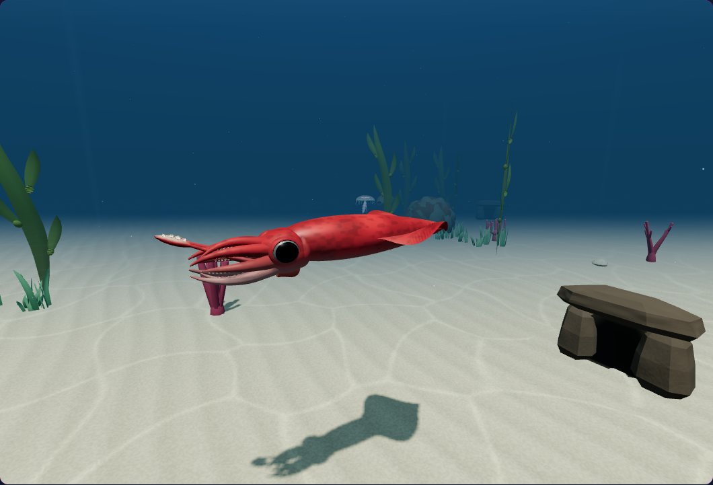

Pale inward-facing feeding clubs reveal the grasping surface during a strike. Warped sand ripples add bounded surface relief and distance filtering. These are actual native simulator captures.

Controlled native strike at 200 ms. Camera and actor placement fixtures; original input, AI and capture controller.